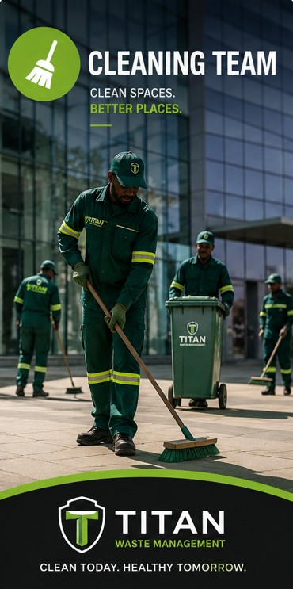

Titan Waste Management and Landfill was established to provide sustainable environmental solutions while contributing to cleaner, safer, and healthier communities across South Africa.
As a 100% black-owned company, we are committed to economic empowerment, professional service delivery, and environmental care.
Our vision is to become a trusted leader in environmental and waste management services by delivering innovative and responsible solutions.
Our mission is to improve communities through dependable cleaning, waste management, recycling, and landfill services.

Titan Waste Management complies with all environmental and operational standards required within the South African waste management industry. We prioritize safety, efficiency, sustainability, and responsible waste handling.